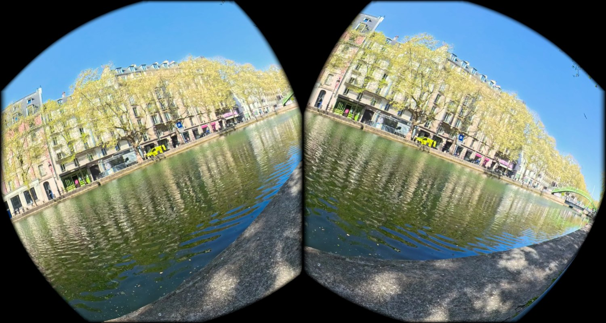

Diffuser vos films en réalité virtuelle sur une flotte de casques Meta Quest, depuis une simple page web. Tout ce qu'il faut savoir, sans connaissance technique.
Vous déposez vos films sur une page web. Vous décidez quels films va recevoir quel casque. Les casques les téléchargent tout seuls dès qu'ils sont allumés et connectés au Wi-Fi.
Ensuite, les casques n'ont plus besoin de rien : les films sont enregistrés dans leur mémoire. Vous pouvez les emporter n'importe où, sans Wi-Fi, sans ordinateur, et les spectateurs regardent les films en toute autonomie.
Le Wi-Fi sert uniquement à remplir les casques. Pendant les projections, il est inutile. C'est ce qui permet d'utiliser les casques en extérieur, sur un salon ou dans un lieu sans réseau.
| Page | À quoi elle sert |
|---|---|
| Bibliothèque | Déposer vos films et corriger leurs réglages. |
| Programmes | Composer les listes de films à diffuser. |
| Casques | Associer les casques aux programmes et suivre leur état. |
À faire une seule fois par casque, avant la première utilisation. Il faut un ordinateur et un câble USB.
scripts/prepare-headset.shBranchez-les tous ensemble, sur un multiprise USB par exemple, et lancez la même commande : elle les traite l'un après l'autre et vous annonce combien ont été préparés. Rien d'autre à faire.
Le programme vous le dit et continue avec les suivants. Débranchez puis rebranchez le casque récalcitrant, remettez-le sur votre tête pour vérifier qu'aucune fenêtre n'attend une réponse, puis relancez la commande. Elle ne fait aucun mal aux casques déjà prêts.
| Type | Ce que voit le spectateur |
|---|---|
| 360° | Il est au centre de l'image et peut regarder partout, y compris derrière lui. |
| 180° | L'image l'entoure de face, sur la moitié avant seulement. |
| Écran | Un film classique projeté sur un grand écran, comme au cinéma. |
C'est que le type d'image retenu n'était pas le bon. Inutile de renvoyer le fichier : dans la bibliothèque, cliquez sur l'icône de réglages en face du film, corrigez le type, et enregistrez. Les casques se mettront à jour tout seuls.
C'est le point le plus mal compris, et pourtant le plus simple à retenir : la qualité ressentie ne dépend pas seulement de la définition du fichier, mais de la surface sur laquelle cette définition est étalée.
Un film en 4K projeté sur un écran virtuel occupe une petite partie de votre champ de vision : l'image est superbe. Le même film en 4K, mais à 360°, doit couvrir tout l'espace autour de vous, y compris derrière : les mêmes pixels sont alors étirés sur une surface six fois plus grande, et l'image paraît molle. Ce n'est pas un défaut de l'application ni du casque.
| Type | Définition à demander | Pourquoi |
|---|---|---|
| Écran | 4K — 3840 × 2160 | Largement suffisant : l'image est concentrée sur une surface réduite. |
| 180° | 4K — 3840 de large | L'image ne couvre que la moitié avant, la 4K y reste correcte. |
| 360° | 8K — 7680 de large | Seule façon d'obtenir, à 360°, la netteté d'un film sur écran. Le casque sait la lire. |
Si vous déposez un film à 360° trop peu défini, un message bleu vous l'indique avant l'envoi et vous précise la définition à réclamer. Le film fonctionnera quand même : il sera simplement moins net qu'il pourrait l'être.

« Export en MP4, codec H.264, son AAC. Pour les vues à 360° : 7680 × 3840, avec un débit élevé (au moins 60 Mb/s). Pour les films sur écran : 3840 × 2160 suffit. Éviter les codecs VP9 et AV1, ainsi que les fichiers MKV et WEBM, que le casque ne sait pas ouvrir. »
Un programme est simplement une liste de films, dans l'ordre où vous voulez les proposer. C'est ce que l'on attribue aux casques — jamais les films un par un.
Créez un programme par usage — par client, par salle, par événement — plutôt qu'un programme unique que vous modifieriez sans cesse. Vous pourrez ainsi changer le contenu d'un lieu sans toucher aux autres.
C'est normal : posé sur une table, un casque se met en veille au bout d'une quinzaine de secondes et suspend son téléchargement. Pour remplir plusieurs casques sans les porter, laissez-les branchés sur secteur et reprenez-les régulièrement, ou demandez à votre prestataire technique d'activer le mode atelier.
Dès que vous dépassez trois ou quatre casques, n'attribuez plus les programmes casque par casque. Utilisez les groupes.
Pour changer le film diffusé sur cinquante casques, vous modifiez un seul programme. Les cinquante casques se mettent à jour d'eux-mêmes à leur prochaine connexion, sans que vous touchiez à un seul d'entre eux.
| Ordre | Opération |
|---|---|
| 1 | Préparer tous les casques par USB (chapitre 2). |
| 2 | Déposer les films et vérifier leur type d'image (chapitre 3). |
| 3 | Composer le programme (chapitre 5). |
| 4 | Créer le groupe et lui attribuer le programme (chapitre 7). |
| 5 | Associer chaque casque, puis le glisser dans le groupe (chapitre 6). |
| 6 | Laisser les casques se remplir, puis vérifier la page Synchronisation. |
La page Synchronisation indique, pour chaque casque, ce qu'il a réellement reçu — d'après ce que le casque lui-même a confirmé, et non d'après ce qui lui a été demandé.
| Message affiché | Ce que vous devez en conclure |
|---|---|
| Contenu à jour | Tout est en place. Le casque est prêt à projeter. |
| Mise à jour en attente | Du contenu l'attend. Il le prendra dès qu'il sera allumé sur le Wi-Fi. |
| Échec de mise à jour | Un téléchargement a échoué. Voir le chapitre suivant. |
| Jamais synchronisé | Le casque est associé mais n'a encore rien reçu. |
| Application hors ligne | Elle n'a pas donné de nouvelles depuis un moment. Cela ne veut pas dire que le casque est éteint : il peut très bien être en train de projeter un film hors réseau. |
En cas de doute, c'est le premier réflexe. Il produit un compte rendu lisible : ce que le casque devrait afficher, pourquoi il le reçoit, et si la mise à jour automatique fonctionne. Joignez ce compte rendu à toute demande d'assistance.
| Ce que vous constatez | Ce qu'il faut faire |
|---|---|
| Le film est à l'envers, ou l'image est coupée en deux. | Le type d'image est mal réglé. Corrigez-le dans la bibliothèque (chapitre 3), sans renvoyer le fichier. |
| L'image est floue, alors que tout fonctionne. | Le film n'est pas assez défini pour être étalé à 360°. Demandez un export en 8K (chapitre 4). |
| Le son fonctionne mais l'écran reste noir. | Le film utilise un codec que le casque ne sait pas lire. Faites-le reconvertir en MP4 / H.264. |
| Le casque montre la pièce autour de vous au lieu de l'application. | Il s'est mis en veille. Remettez-le sur votre tête et bougez la tête quelques secondes ; l'image revient. |
| Le téléchargement n'avance plus. | Le casque s'est endormi, ou le Wi-Fi a été coupé. Rebranchez-le, reprenez-le en main, et vérifiez la page Synchronisation. |
| Un casque n'apparaît pas dans la liste. | L'association n'a pas abouti. Recommencez avec un nouveau code (chapitre 6) : un code n'est valable qu'une fois. |
| Le casque est à court de place. | Retirez des films de son programme : il libérera de lui-même ceux qu'il n'a plus à conserver. |
Un envoi interrompu ne reprend pas où il s'était arrêté : il faut recommencer le film entier. L'application vous avertit si vous tentez de fermer la page, mais évitez aussi de mettre l'ordinateur en veille pendant le transfert d'un gros fichier.
Retirez-le d'abord des programmes qui le contiennent. Sinon les casques chercheront un film qui n'existe plus et signaleront un échec de mise à jour.
Une réinitialisation efface l'application et l'association. Le casque devra repasser par la préparation par USB (chapitre 2), puis par un nouveau code.
Les films sont conservés hors du casque, sur un stockage en ligne. Perdre ou réinitialiser un casque ne fait donc jamais perdre un film : il suffit de le préparer à nouveau et de l'associer pour qu'il se remplisse tout seul.
VR Cinema Hub — guide de prise en main, version 1.1.6. Les procédures détaillées à l'usage des techniciens figurent dans les documents GUIDE_EXPLOITANT et TROUBLESHOOTING fournis avec l'application.